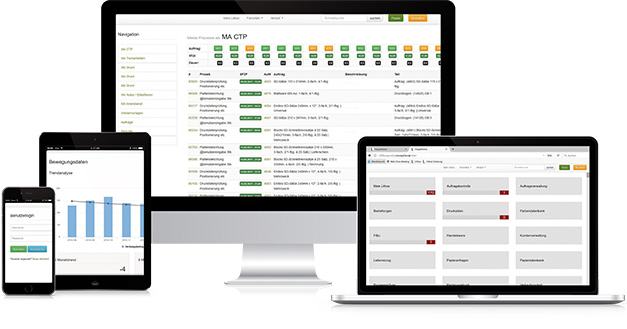
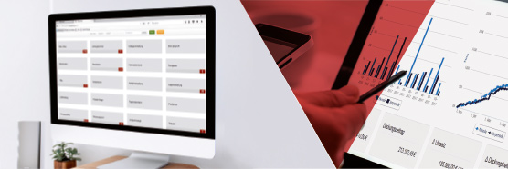

Was ist Lithos?
Lithos ist ein voll integriertes Management Informationssystem für die Druckindustrie. Ziel von Lithos ist es, alle realen Arbeitsabläufe und Wertschöpfungsprozesse digital abzubilden.
Dabei sind die Bereiche nicht als Module zu betrachten, sondern als Bestandteile eines voll integrierten Systems. Lithos entfaltet seine Macht, wenn man sich der Philosophie hingibt, alle Informationen digital zu erfassen und keine handschriftlichen oder mündlichen Informationen außerhalb des Systems vorhält.
Lithos ist dabei eine reine Server-Anwendung, die ausschließlich aus Open-Source-Komponenten besteht. Clientseitig ist Lithos vollständig über einen Webbrowser zu bedienen. Weitere Software ist nicht notwendig. Lithos kann außerdem vollständig mittels mobiler Endgeräte genutzt werden und richtet sich an Druckereien ab einer Größenordnung von ca. 15 Mitarbeitern, in denen ein Arbeiten durch Zuruf nicht mehr möglich ist. Lithos ist quelloffen und frei.
Folgende Bereiche sind bisher implementiert:
- Kalkulation
- Bogendruck
- Rollendruck
- Digitaldruck
- Angebotserstellung
- Produktionsplanung
- Digitale Auftragstasche
- Produktionssteuerung
- Nachkalkulation
- Rechnungswesen
- Warenwirtschaft
- Chaotische Lagerhaltung
- Warenein- und ausgangserfassung
- Bestandsanalysen
- Bestellwesen
- automatische Bedarfsermittlung
- Inventur
- Papierdatenbank
- Fertigwarenverwaltung
- Lieferschein- / Rechnungskontrolle
- Online-Shop für Fertigwaren
- CRM und Kampagnenmanagement
- Außendienststeuerung
Geschichte & Status Quo
Die Entwicklung von Lithos begann im September 2010 bei der Druckerei Mundschenk in Soltau. Hier wurden bis dato die MIS Systeme Pagina, Optimus2020 und Hiflex eingesetzt. Der jeweilige Systemwechsel hat die Gesamtsituation der EDV in der Regel nicht besser gemacht, sondern nur anders.
Getrieben von der Vision über ein Produktionssystem zu verfügen, das die realen Abläufe in ihrer ganzen Komplexität abbilden kann, wurde aus der Praxis für die Praxis Lithos entwickelt. Im Januar 2011 wurde nach nur zehn Monaten Entwicklung das bis dahin führende System Hiflex durch Lithos abgelöst und seitdem fortwährend dank enger Mitwirkung aller Mitarbeiter der Druckerei Mundschenk weiterentwickelt.
Eher durch Zufall sind weitere Druckereien auf Lithos aufmerksam geworden und mittlerweile gibt es eine Anwenderschaft von insgesamt vier Druckereien, die Lithos erfolgreich und zufrieden einsetzen.
Zwischen den Lithos-Anwendern hat sich eine Partnerschaft auf Augenhöhe entwickelt, die gemeinsam die Entwicklung von Lithos nach eigenen Anforderungen vorantreibt. Mittlerweile finden regelmäßig Anwendertreffen und Entwicklungs-Sprints statt.
Die Anwender
EURODRUCK
Offsetdruckerei, gegründet 1989
38 Mitarbeiter, Lithos seit 2014
Bei uns von Hiflex zu Lithos:
Also von teurer statischer Lösung mit veralteten Features
zu einer Open-Source-Lösung die lebendig und anpassungsfähig ist.
Bei Lithos ist Weiterentwicklung nach eigenen Wünschen endlich möglich und bezahlbar!
Zum Vorteil der ganzen Community! So muss ein WEB-basierendes MIS-System heute sein!
Olaf Kern
Geschäftsführer
0 40 / 432 26-26
o.kern@eurodruck.org
COLOR+
Akzidenzdruckerei, gegründet 1991
22 Mitarbeiter, Lithos seit 2014
Nach mehreren extern bedingten Softwarewechseln und viel verbranntem Geld hat es uns gereicht! Mit der Open-Source-Lösung Lithos gehört das digitale Gehirn des Unternehmens nun schon seit drei Jahren wieder uns und kann uns nicht mehr genommen werden. Wollen Sie sich wirklich noch auf externe Lieferanten verlassen, wenn es um den Kopf Ihres Unternehmens geht?
Markus Pfitzner
Projektmanagement
0 55 31 / 93 20-20
m.pfitzner@colorplus.de
CONCEPTFORM
Formularspezialist, gegründet 1990
15 Mitarbeiter, Lithos seit 2015
Unsere Reklamationsquote ist von 1,8 % auf 0,3 % (bei 2000 Einzelaufträgen) gefallen. Das heißt, wir sparen mindestens 25.000 € pro Jahr. Unsere Sonderprodukte werden durch Lithos sowohl in der Kalkulation als auch in der Produktion sehr gut abgebildet. Dies hat uns bei allen anderen Programmen aufgrund starrer Grundgerüste gefehlt. Durch die gute Übersichtlichkeit und Handhabung entsteht große Ruhe im Betrieb und die Eigenverantwortung bei den Mitarbeitern steigt.
Britta Münker
Projektmanagement
0 27 45 / 93 250-20
b.muenker@conceptformgmbh.de
MUNDSCHENK
Bogen-, Rollen- und Digitaldrucker
20 Mitarbeiter, Lithos seit 2011
Nach jahrelanger Hoffnung auf dem Softwaremarkt ein MIS zu finden, das unseren Ansprüchen gerecht wurde, haben wir im Jahr 2010 angefangen Lithos zu entwickeln. Es ist das einzige System, das unsere Bereiche Bogendruck, Endlosdruck, Digitaldruck und Zeitungsdruck mühelos abbilden kann. Gleichzeitig schafft es hohe Transparenz und bietet großartige Anpassungsmöglichkeiten. Von Anfang an lautete das Motto: Aus der Praxis für die Praxis.
Dr. Martin Mundschenk
Geschäftsführer
0 51 91 / 808-112
m.mundschenk@mundschenk.de
Unsere IT-Kompetenz
Alexander Stecker
Softwareentwickler
Alexander Stecker ist seit seinem Abschluss zum Bachelor of Science (in Informatik, Universität Paderborn) freiberuflicher Softwareentwickler für kleine und mittelständische Unternehmen. Er hat seit dem ersten Einsatz von Lithos auch außerhalb der Druckerei Mundschenk Kontakt mit dem System. Angefangen mit der Bereitstellung der Serversysteme hat er sich fortlaufend in das System eingearbeitet, betreut seitdem bei verschiedenen Nutzern den Betrieb und entwickelt kundenspezifische Lösungen. Im Rahmen der Lithos Sprints ist er Teil des Entwicklerteams und hat zuletzt am neuen Versandablauf gearbeitet.
Michael Karch
Softwareentwickler
Michael Karch ist Diplom Informatiker (Universität Paderborn) und arbeitet nach Anstellungen bei Beiersdorf, Malaysia und Doppel Gets Netventures, Malaysia seit seiner Rückkehr nach Deutschland als freiberuflicher Softwareentwickler für kleine und mittelständische Unternehmen. 2016 ist er mit in die Lithos Entwicklung eingestiegen und hat in den drei Sprints 2016 u.a. den Etikettendruck, den Fremdversand und weitere kleine Projekte beigesteuert. Er steht für Kundenprojekte und spezifische Anpassungen zur Verfügung.
Das dürfen Sie erwarten
Open Source
- Erfolgreich praktizierte Vorgehensweise
- Mit dieser Open-Source-Lösung sind Sie und wir auf der sicheren Seite.
Zusammenarbeit
- Nutzen Sie die angebotenen Software-Vorführtage (Dauer 5 – 6 Stunden)
- Besuchen sie die Anwenderbetriebe, um sich das System in der Praxis anzuschauen.
Entwicklung
- Eine gute, stringente Zusammenarbeit mit der Anwendergruppe.
- Austausch auf Augenhöhe
Weiterentwicklung
- Sie werden Teil dieser Gruppe, die sich 1 – 2 mal im Jahr trifft, um dann nach demokratischen Prinzipien die Weiterentwicklung voranzubringen.
- Online-Schulungen durch Kollegenbetriebe (browserbasiert).